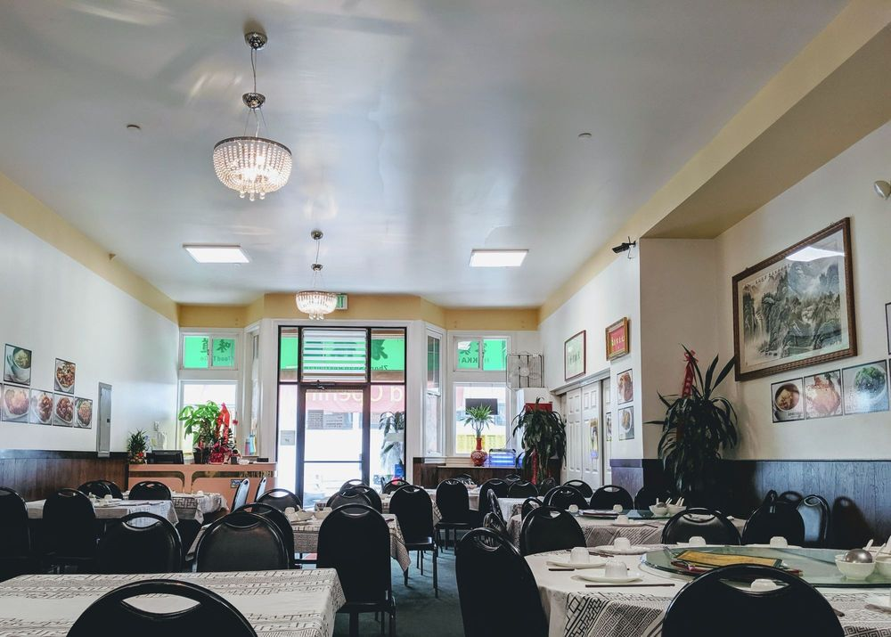

<!DOCTYPE html>
<html lang="en">
<head>
    <meta charset="UTF-8">
    <meta name="viewport" content="width=device-width, initial-scale=1.0">
    <meta http-equiv="X-UA-Compatible" content="ie=edge">
    <title>Document</title>
    <link rel="stylesheet" href="style.css">
</head>
<body>
    <div class="wrapper">
	<!--
		<div class="main">
			<div class="main-pic">
				<div class="img-content">
					
				</div>
			</div>
			<div class="reviews repeat">
				<h3>Reviews</h3>
				<p class="the-review desc">Very impressed! Usually when I eat family style at Chinese restaurants I enjoy 50% of the dishes. I have to say 9/10 items were good! - Kristofferson W.</p>
			</div>
			<div class="who-we-are repeat">
				<h3>Who We Are...</h3>
				<p class="the-review desc">A family restaurant based in San Francisco, Zhong Shan Hakka Cuisine Restaurant, ran by Chef Jin Hua Li, serves authentic Hakka Cuisine, as well as many traditional Cantonese dishes.</p>
			</div>
			<div class="google-map">
				<iframe class="map" src="https://www.google.com/maps/embed?pb=!1m14!1m8!1m3!1d5306.261142299606!2d-122.48895765621603!3d37.7402878074469!3m2!1i1024!2i768!4f13.1!3m3!1m2!1s0x0%3A0xde21cc529fccf39d!2sZhong%20Shan%20Hakka%20Restaurant!5e0!3m2!1sen!2sus!4v1583040029690!5m2!1sen!2sus"></iframe>
			</div>
		</div>
		<div class="footer">
			<div class="info">
				<section class="Address">Address: 2237 Taraval St, San Francisco, CA 94116</section>
				<section class="contact">Phone: (415) 592-8938</section>
				<section class="hours">Hours: 11AM - 3PM, 5-9:30PM THURSDAYS: CLOSED</section>
			</div>
			<div class="social">
				<a href="#">Facebook</a>
				<a href="#">Yelp</a>
				<a href="#">Email</a>
			</div>
		</div> -->
	</div>
    <script src="main.js"></script>
</body>
</html>